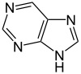
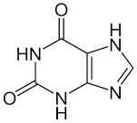
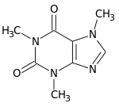
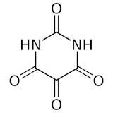
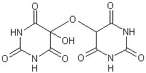
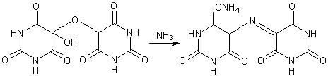

Quando (è passato un bel po' di tempo?) frequentavo con gli amici di scuola il laboratorio di chimica organica, ogni tanto usciva da parte di qualcuno la battuta:
-LA MUREXIDE, LA MUREXIDE! indicando con finto ribrezzo il soffitto o una parete del lab. -E' vero, è vero, eccola là che scivola, rispondeva qualcun altro con risibile orrore...
Per capire questo apparente linguaggio di pazzi occorre sapere che noi intendevamo per "murexide" un immaginario quanto immondo mollusco, rosso e viscido, schifosamente pronto a cadere nel becker delle analisi...
Si sa, le giovanili fantasie non hanno limiti, e tutto così per ridere, magari per sdrammatizzare la ricerca di qualche famigerato doppio legame.
Tutto ciò sarebbe forse caduto nell'oblio dei ricordi se qualche tempo fa, senza sapere questi precedenti, l'amico Marco (ecco il link al suo blog, per i pochi che non lo conoscessero) non mi mandasse via e-mail, indovinate un po' che cosa... il classico saggio analitico per i prodotti xantinici: proprio la prova della MURESSIDE!
Ma che meraviglia, mi son detto, lo faccio subito in onore dei vecchi tempi!
Ma cosa diavolo è la muresside? Ci vuole una brevissima introduzione...
Tutto ha origine da sostanze biologiche naturali o derivate chiamate acido urico, purina e xantina:



Acido urico Purina Xantina
per esempio il derivato trimetilico della xantina è la notissima caffeina del caffè

che con le sorelle quasi gemelle teobromina (del cacao) e teofillina (del tè) costituiscono le cosiddette basi xantiniche.
In questi derivati xantinici per ossidazione l'anello imidazolico (quello pentagonale di sinistra) viene distrutto dando origine ad una miscela di allossana e acido dialurico,

Allossana Acido dialurico
i quali possono condensare per formare alloxantina

A sua volta l'alloxantina, in presenza di ammoniaca, forma il sale d'ammonio dell'acido purpurico intensamente colorato in rosso purpureo, detto finalmente... muresside!
(Dice qualcosa il nome Murex degli antichi?)
Ecco la reazione finale, che porta dalla alloxantina alla muresside.

E' interessante notare che tutti questi nomi pittoreschi dei derivati dell'acido urico vennero scelti per la maggior parte da Wohler e Liebig secondo particolari ragionamenti in un tempo in cui era quasi impossibile intuirne le strutture ed il metodo per determinare il contenuto di azoto era così soggetto ad errori da dare risultati incerti.
Col tempo questi nomi storici sono riusciti a permanere anche a dispetto della moderna nomenclatura ed ora li ritroviamo ancora sulla cresta dell'onda, riassuntivi di altrimenti troppo lunghi termini IUPAC.
La muresside è stata perfino usata per un breve periodo nella seconda metà dell'ottocento come colorante per lana e seta; si partiva addirittura dal guano del Cile, estraendone l'acido urico, trasformandolo in --> allossana, --> ac. dialurico, --> ecc. --> ecc., un lavoraccio insomma... poi sono arrivati i coloranti derivati dall'anilina e simili e la simpatica muresside è ricaduta in oblio, relegata in qualche prova di laboratorio o rivissuta in qualche strambo blog, come questo.
Nella prossima puntata arriveremo finalmente alla fase sperimentale, che ci confermerà in pratica il senso di tutti questi discorsi.
2 commenti